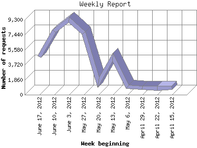

The Weekly Report identifies the activity for each week within the report
time frame. Remember that one page hit can result in several server requests
as the images for each page are loaded.
Note: Depending on the
report time frame for this report the first and last week may not represent
a full seven day week, resulting in lower hits.

| Week beginning | Number of requests | Number of page requests | |
|---|---|---|---|
| 1. | April 15, 2012 | 828 | 35 |
| 2. | April 22, 2012 | 791 | 1 |
| 3. | April 29, 2012 | 852 | 0 |
| 4. | May 6, 2012 | 964 | 2 |
| 5. | May 13, 2012 | 4,656 | 1 |
| 6. | May 20, 2012 | 1,541 | 1 |
| 7. | May 27, 2012 | 7,640 | 9 |
| 8. | June 3, 2012 | 9,274 | 4 |
| 9. | June 10, 2012 | 7,873 | 131 |
| 10. | June 17, 2012 | 4,711 | 57 |
Most active week beginning June 10, 2012 : 131 pages sent. 9,274 requests handled.
Weekly average: 24 pages sent. 3,913 requests handled.
This report was generated on June 21, 2012 15:12.
Report time frame April 16, 2012 06:48 to June 20, 2012 23:42.
| Web statistics report produced by: analog 6.0 / Report Magic 2.21 |